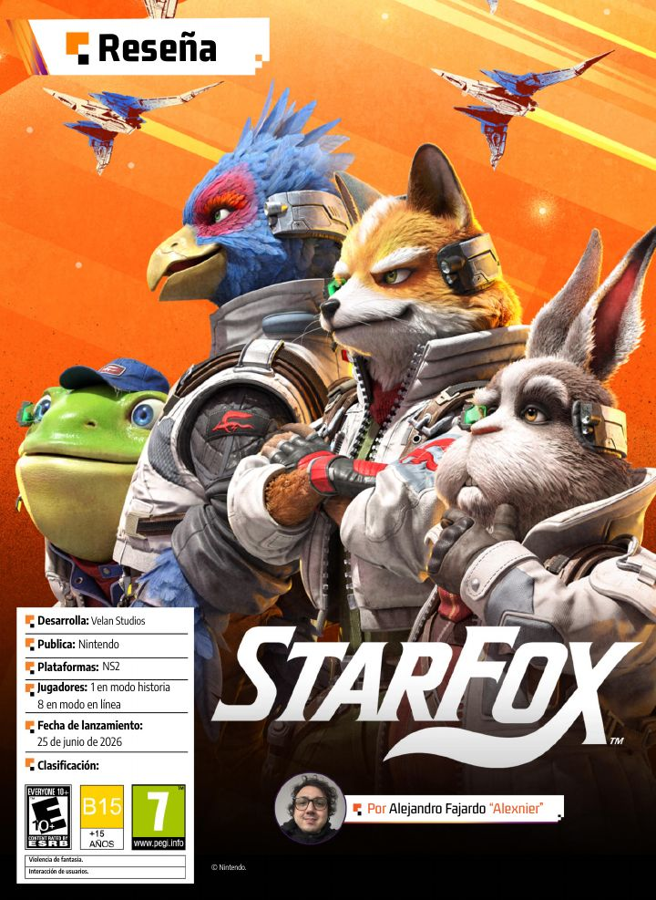
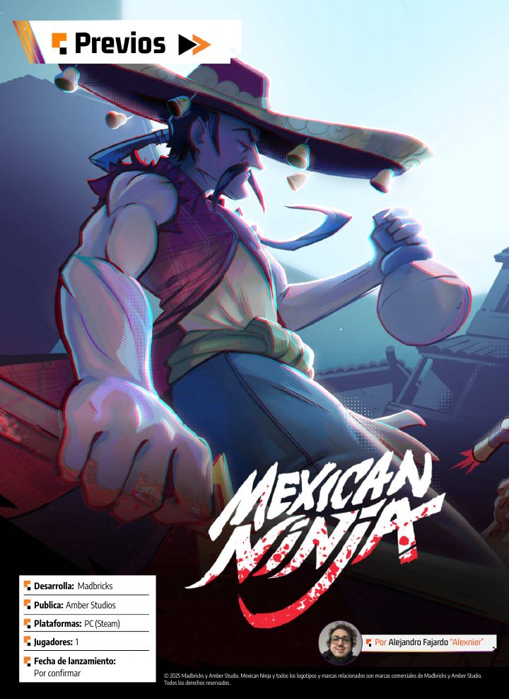
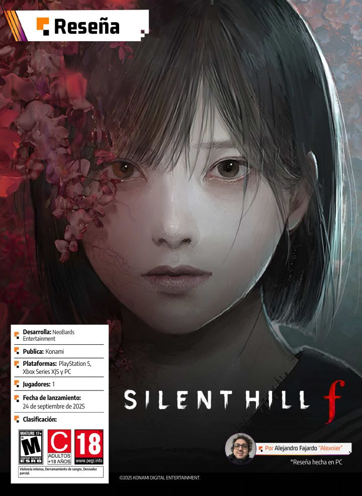

Joya de
Joya dela corona Reseña · Game Effect 53
Castlevania: Belmont's Curse
«Castlevania: Belmont's Curse es una joya que todo fan de la saga debe probar. Es una evolución de lo que deberíamos ver en la saga en 2D.»Leer en Game Effect 53 →
Canal mexicano de videojuegos retro y modernos: directos todos los días, platicando con el chat y con Lumi, la chica de los 90 que me acompaña en cada partida.
▶ Ver el canal
La hora de tu ciudad se calcula sola (con horario de verano).
Directo especialTodos los directos se quedan en el canal. Aquí arriba está el más reciente y abajo los anteriores; en el canal están todos.
▶ Todos los directosLumi (Rumi Kisaragi) es una chica de 21 años que se quedó en la red en noviembre de 1998. Ama el City Pop, Final Fantasy VII y Evangelion, es sarcástica con cariño y está en cada directo: platica con el chat, me molesta cuando muero y hace de todo para que el directo esté vivo.
lumi …Háblale como a cualquiera: te contesta en voz durante el directolumi di: …Lo repite en voz (con filtro, ¡pórtense bien!)!pregunta …Una pregunta para mí; Lumi me la lee!idea …Una idea para el canal; me llega al terminar el directo!clipMarca un momento para los clips!rachaCuántos directos seguidos llevas; Lumi celebra a los fieles!cumple 3 de mayoLumi te festeja en tu día, con regalo!rachasLas 3 rachas más largas del chat!loreLumi cuenta algo de su historia (o «lumi, dime el lore de @alguien»)!amigosLos canales de mis amigos!merchLa tienda: playeras y cosas del canal!cantarLumi canta!comandos · !ayudaLa lista en el chatlumi haz una triviaIgual que !trivialumi adivinaIgual que !adivinalumi marca esoIgual que !cliplumi cantaIgual que !cantarlumi cuál es mi rachaIgual que !rachalumi voto por la 2Igual que !voto 2lumi dile a @alguien que …Le pasa tu recado en voz1 · 2 · 3 · 4Vota en sus encuestas y contesta la trivia!triviaPreguntas del juego que estoy jugando!adivinaPistas de uno de 126 juegos clásicos (no se repiten hasta que salgan todos); el primero que atine gana!bingoTu cartón del directo: Lumi lo va tachando sola!apuesta¿Cuántas veces muero antes del jefe? Una apuesta por jefe!muerte · !vencidoCuenta mis muertes y jefes en pantalla (!muertes dice cuántas van)!duelo @alguien 50Reta a alguien por monedas (acepta con !acepto en 90 s)!ppt piedraPiedra, papel o tijera contra Lumi!voto 2Vota el juego del próximo directo (cuando haya votación)!mascota · !alimentarCómo está el Ciber-Chocobo; denle de comer cuando tenga hambre!meta · !topCuánto falta para la meta del directo · los 3 primeros del mesGanas monedas por estar en el directo y gastarlas es parte del juego. Revisa las tuyas con !puntos (o !monedas), o pregúntale: «lumi, ¿cuántas monedas tengo?».
!canje pregunta … tu pregunta pasa al frente de la fila · 300!canje grito … tu mensaje en grande en pantalla · 400!canje trivia o !canje adivina sale ya, sin esperar · 500!canje apodo … le pones nombre al jefe de turno · 600!canje voto tu voto del próximo juego vale doble · 700!canje encuesta … Lumi lanza una encuesta de tu tema · 900!canje chocobo … le pones nombre al Ciber-Chocobo · 1000!canje reto … un reto para mí en pantalla; si lo cumplo ganas puntos del mes · 1500!canje saludo … durante un mes Lumi te recibe con tu frase al llegar · 1500!canje final tu nombre en la pantalla de «Gracias» como patrocinador del directo · 2000!canje dedicatoria … tu mensaje en la tarjeta grande del centro y Lumi lo lee en voz · 3000🏆 Platicar y jugar también da puntos del mes (!top). Quien junte más en el mes es el campeón del chat y le mando un premio.
Lo que estrenamos el 26 de noviembre.
Estos solo funcionan si los escribo yo, un mod o un amigo del canal.
!encuestaLumi inventa una encuesta del juego (o «!encuesta ¿Pregunta? | A | B»)!cerrarCierra la encuesta!votacion A | B | CVotación del juego del próximo directo · !votacion cerrar dice el ganador!muertes 5 · !jefes 2Corrige el contador (!muerte -1 resta una)!apuesta stopCancela la apuesta!preguntasLumi lee la siguiente pregunta del chat!resumenLumi hace el resumen del directo antes de despedirnos!reto cumplido · !reto falladoCierra el reto que canjearon (si lo cumplo, gana puntos del mes)Lumi, … (con mi voz)Cualquiera de estos, dicho al micrófonoLos que no se pierden un directo. Las rachas cuentan directos seguidos; los puntos del mes se ganan platicando y jugando con Lumi.
En el chat del directo: !voto y el número.
Playeras y sudaderas del canal en Niño Gamer, con envíos a todo México.
Ver toda la tiendaAdemás de jugar en directo, escribo reseñas y avances para Game Effect, la revista digital de videojuegos de México. Algunas de mis reseñas y avances:
Joya de«Castlevania: Belmont's Curse es una joya que todo fan de la saga debe probar. Es una evolución de lo que deberíamos ver en la saga en 2D.»Leer en Game Effect 53 →

¡Juegazo! Reseña · Game Effect 51«…este remake no reemplaza para nada a la versión original, pero es un regalazo poder jugarlo, y para mí supera con creces a las versiones anteriores.»Leer en Game Effect 51 →
 Avance · Game Effect 49
Avance · Game Effect 49
«Tras haber probado la demo técnica actual, podemos afirmar que, si el cyberpunk es lo tuyo, este lanzamiento debe estar obligatoriamente en tu radar.»Leer en Game Effect 49 →
 Avance · Game Effect 47
Avance · Game Effect 47
«Este 2026 traerá de regreso a uno de los pilares más grandes del terror en los videojuegos.»Leer en Game Effect 47 →
 8.5
Reseña · Game Effect 46
8.5
Reseña · Game Effect 46
«Ninja Gaiden 4 es la evolución que la franquicia necesitaba. […] No es un juego perfecto, pero sí sienta las bases para pulir lo necesario hacia el futuro.»Leer en Game Effect 46 →

Avance · Game Effect 46«Una mancuerna que no sabíamos que necesitábamos, pero que se vuelve adictiva por el gameplay tan fluido y divertido…»Leer en Game Effect 46 →

9.0 Reseña · Game Effect 45«Silent Hill f es la definición de cómo tomar una saga con un concepto muy arraigado desde su primer título y arriesgarse a cambiarlo para traer algo nuevo y fresco a la franquicia.»Leer en Game Effect 45 →
 9.5
Reseña · Game Effect 44
9.5
Reseña · Game Effect 44
«Silksong es un juego que, a pesar de todo el hype que pudo haber tenido desde su anuncio, resulta ser una obra excelente y un ejemplo de cómo se puede crear algo sobresaliente con recursos limitados.»Leer en Game Effect 44 →
Contenido gratis de Lumi y, si quieres, un tip de $1 al mes. Tu apoyo hace posible el canal.
ApoyarLa revista digital de videojuegos de México: reseñas, noticias, retro y entrevistas.
Leerla gratisLumichan es la herramienta de escritorio personal de Alexnier para preparar el contenido del canal: miniaturas, anuncios de directos, clips de los mejores momentos y sus textos. Con permiso del propio Alexnier, sube sus clips a sus borradores de TikTok para que él los revise y los publique desde la app de TikTok, y publica en sus propias páginas de redes sociales.
No es una app pública: solo la usa Alexnier con sus propias cuentas. Términos · Privacidad